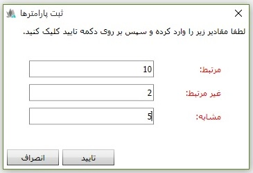

بعد از معرفی انواع ضریب شغلی نوبت به تعیین ضریب شغلی می رسد تصویر زیر نحوه ی تخصیص دادن ضریب به کارمندان را نمایش می دهد:

در تصویر بالا ابتدا در سربرگ تصویر، ماه اجرا را تایید کنید، در سمت چپ تصویر لیست مشاغل را مشاهده می کنید، و در سمت راست تصویر کارمندهایی که به ضریب شغلی تخصیص داده شده اند را مشاهده می نمایید، برای تخصیص مشاغل به ضریب شغلی نام شغل مورد نظر را از لیست سمت چپ انتخاب کنید، سپس با استفاده از کلید راست گرد شغل مورد نظر را به ضریب شغلی تخصیص دهید، بعد از کلیک بر روی کلید راست گرد پنجره ی زیر باز می شود
مقادیر صفحه ی بالا را پر کنید تا شغل مورد نظر به ضریب انتخاب شده تخصیص داده شود